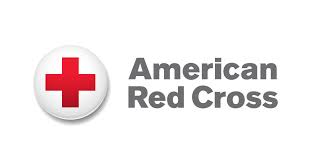
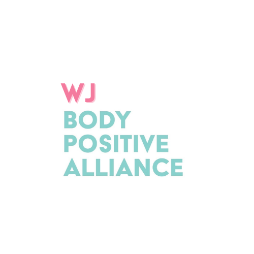
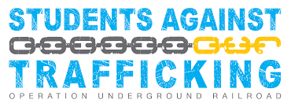
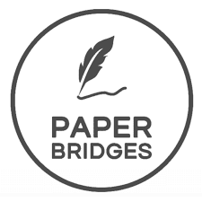
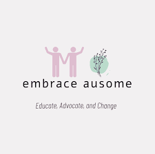
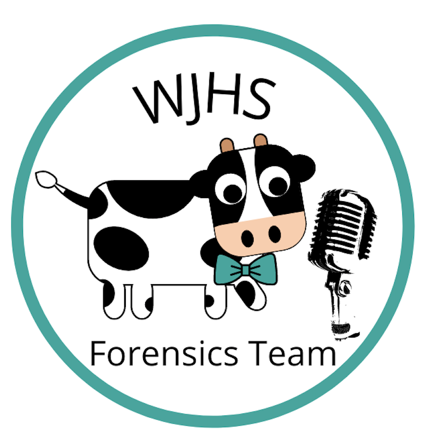

-

APro Meets Weekly Thu After School In: 199B, also called Dance Studio Sponsor: O’Reilly Learning and performing Kpop dances with friends while fostering common interest in Kpop tags: Arts, Dance, Interest Instagram: @apro_wj -

Red Cross Club Meets Biweekly Mon during Lunch In: Student Commons or Room 130 Sponsor: Simmons To support the American Red Cross and provide ways for students to give back to their communities. tags: Charity/Activism, Interest WJ Red Cross Club on Instagram -
Operation Smile Meets Monthly Thu during Lunch In: Dance Studio (Auxiliary Gym) Sponsor: Cornell OperationSmile at WJ is a nationwide organization aiming at providing surgeries to children born with cleft lip and cleft palate. The WJ OperationSmile club's goal is to raise money through fundraising, fun activities, and donations. We hope to educate members about children born with these conditions. Please join us to raise awareness throughout the community and help advocate for those in need of surgeries. tags: Charity/Activism, Interest @operation_smilewj -
Homework Club Meets Tuesday and Wednesday after school In the Media Center Sponsor: Onley Need some homework help? Want a quiet place to study after school? Stop by the media center Tuesdays through Thursdays tags: homework -
Traditional Asian Dance Association (TADA) Meets Weekly Thu, Fri during Lunch In: Room 121 Sponsor: Won Prepare Asian dance performances tags: Arts, Culture, Dance, Interest @wj.tada -
Volleyball Club Meets Weekly Wed during Lunch In: G51 Sponsor: Whalen Practice/Teach Volleyball tags: Games/Sports, Interest -
WJ Flys Meets Weekly Wed during Lunch In: G46 Sponsor: Martin To engage students in an interest and let them experience the marine ecosystems. tags: Games/Sports, Interest WJFlys -
WJ Turkish Society Meets Biweekly Mon during Lunch In: 122 Sponsor: Foerster Luu Putting all the Turkish people together. Anyone who is struggling can get help from this club. tags: Culture, Interest -
History Club Meets Weekly Fridays at Lunch In: Room 114 Sponsor: Mr. Meier Preserving the history around WJ and fostering the learning and love of history! tags: Culture, Interest @wjhs_history -

Digital Art Club Meets Weekly Mon during Lunch In: G82 Sponsor: Engelhardt If you need help in digital art then this club is for you. We provide help for students who are in need, and we create a friendly environment for students to share their problems to us and we try to the best of our ability to help them. Our purpose is to share our knoweldge of digital art with others and present how amazing digital art can be. tags: Arts, Interest @digital_art_wj -
Astronomy Club Meets Biweekly Tue during Lunch In: P10 Sponsor: Fullenkamp Learn more about astronomy in a fun and social way tags: Academic, Interest wj.astronomy -
Chinese Culture Club Meets Biweekly Thu during Lunch In: G32 Sponsor: Shu Gain knowledge of Chinese culture and learn about Chinese traditions, arts, food, and more! tags: Culture, Interest -
Go Green Club Meets Monthly Wed during Lunch In: 231 Sponsor: Bullock Our club wants to educate our school community on environmental issues going on in the world. We promote sustainability and our committed to helping clean up our local community. tags: Charity/Activism, Interest Instagram: @wjgogreenclub Google classroom code: hjtmfs6 -
Club Council Meets Biweekly Mon during Lunch In: Room 122 Sponsor: Foerster Luu The Club Council wants to help clubs collaborate and build community by creating more activities of common interest. tags: Interest -
Outdoor Enthusiasts Club Meets Weekly Mon during Lunch In: 211 Sponsor: Daney For enthusiasts of many outdoor sports including but not limited to, Rock Climbing, Mountain Biking, White Water Kayaking, and hiking to meet friends who do the same sport as well as others that they would like to learn. ***OUTDOOR ACTIVITIES ARE NOT SCHOOL SPONSORED OR SUPERVISED*** This is purely a club to connect with other students who are interested in outdoor activities. tags: Games/Sports, Interest -
Persian Culture Club Meets Monthly Thu during Lunch In: G34 Sponsor: Kinani To learn about Persian culture in a fun and interactive way. tags: Culture, Interest @wjpersiancultureclub on Instagram -
WJ Car Club (for now) Meets Biweekly Fri during Lunch In: Portable 8 Sponsor: Laukaitis The purpose of this club is to connect auto enthusiasts at WJ to discuss all things cars. We have many ideas on where we want to take this club but are just getting started. tags: Interest TBD -
WJ Global Health Meets Monthly Fri during Lunch In: 223 Sponsor: Chau To promote global health learning at WJ. tags: Charity/Activism, Interest Instagram: @wjglobalhealthclub -

Body Positive Alliance Meets Biweekly Wed during Lunch In: Room 213 Sponsor: Deonarain We advocate for the acceptance of all bodies regardless of physical ability, size, gender, race, or appearance and aim to educate ourselves on the topic! tags: Charity/Activism, Interest Instagram: @walterjohnson_bpa -
Political Analysis Club Meets Biweekly Tue during Lunch In: 106 Sponsor: Muehl Discuss current and previous elections, map them using digital software, and analyze their effects on the policy making process. tags: Interest Instagram: @wjhs_politicalanalysis -

Asian American Student Union Meets Second and Fourth Week of the month Mon during After School In: 122 Sponsor: Foerster Luu We want to create a community that respects the diverse cultures of AAPIs at WJ, while learning more about our differences. AAPIs deserve a voice in the school-wide conversation and with school-leadership. We want to address all and any misconceptions about AAPIs. tags: Culture, Charity/Activism, Interest @wj.aasu -
Walter Johnson Action Adventure Club Meets Biweekly Tue during Lunch In: room #107 Sponsor: Delello The purpose of this club is community clean up. We will being going to cool places like creeks and trails and help clean up. tags: Charity/Activism, Interest AAC.wj -
Mena Meets Biweekly Mon during Lunch In: G34 Sponsor: Kinani The Walter Johnson Mena club is meant to create a space for Middle Eastern and North African students. We will hold fundraisers throughout the year for different Mena causes and acquire SSL hours along the way. tags: Culture, Interest wj_mena -
Fashion Club Meets Biweekly Wed during Lunch In: G83 Sponsor: Hrin To discuss and explore the culture of fashion tags: Arts, Interest n/a -
Writing Club Meets Weekly Mon during Lunch In: 192 Sponsor: Burnet Writing and critiquing the writing (in a kind and safe place) of fellow writers. tags: Academic, Arts, Interest -
Korean Heritage Club Meets Weekly Tue during Lunch In: Room 121 Sponsor: Won Our purpose is to celebrate and spread Korean culture. tags: Culture, Interest -
Non Profit Homeless Organization Meets Weekly Mon during After School In: 168 Sponsor: Ramirez A Non Profit Organization for homeless refugees In the country of Georgia, providing a house and a living place for those who have been abandoned after the Russo-Georgia war, accompanied by one of the biggest construction companies In the country Helping us from across the world. tags: Charity/Activism, Interest -
ASL club Meets Weekly Wed during Lunch In: p 7 Sponsor: O'Connor For students to get extra practice and monthly have a meeting dedicated it ASL culture. This club is bringing awareness to deaf history. tags: Culture, Arts, Interest -
Maison Shalom Club Meets Weekly Tue, Thu during After School In: Room 174 Sponsor: Butler We fundraise and raise money for Burundian refugees affected by the atrocities in Burundi while simultaneously raising awareness on the foundation and organization that fosters them and provides them with the resources to healthily cope with the situation they are all unfortunately in. The organization is called Maison Shalom, started by a woman named Marguerite Barankitse. She has saved over 90,000 refugees and has given many of them an education, has built a rehabilitation center called Oasis of Peace which provides them with resources and a safe space to cope with their traumas, and is internationally known and respected for the work she does with the help of a strong team. Many of these refugees have gone on to study at university and beyond. We are ambassadors of Maison Shalom here at WJ and Bethesda which represents Maison Shalom in the U.S. We are entirely youth - led. Our meetings are after school (sometimes on zoom so you'll have to email shiimanantulya8@gmail.com for the zoom information). We hope to see you at our meetings! tags: Culture, Interest President (Insta) - @shiima.nantulya Vice President (Insta) - @br4_d3n Club Insta - @wj.maisonshalom -
Black Student Union Meets Weekly Mon during Lunch In: Room 254 Sponsor: Kellerman 1. Strengthen student relationships by providing them a safe place to talk and express their feelings. 2. Encourage students to learn more about their Cultural Heritage and history. 3. Create opportunities for students to strengthen their academics. 4. Learn more about various careers. tags: Culture, Interest Google classroom code: zrqrdw2 IG: WJ_BSU Twitter: wjbsu -
Sports Debate Club Meets Biweekly Tue, Thu during Lunch In: G40 Sponsor: Martin To debate and argue about sports and to bring people together and establish a community. tags: Games/Sports, Interest -
Wildcat Step Team Meets Weekly Tue, Thu during After School In: Room 254 & outdoor parking lot Sponsor: Kellerman The Purpose of the Wildcat Steppers: Stepping or step‐dancing is a form of percussive dance in which the participant's entire body is used as an instrument to produce complex rhythms and sounds through a mixture of footsteps, spoken word, and hand claps. In this interest club we give students the opportunity to learn techniques in stepping, dance, and to bond with other students. tags: Dance, Culture, Interest -
Educators Rising Meets Biweekly Tue during Lunch In: G03 Sponsor: Yoo Educators Rising is directed towards students who want to pursue a career in the education field. We volunteer around the community and learn more about different teaching professions. tags: Academic, Interest -
ACG Club Meets Weekly Mon, Wed, Fri during After School In: Room 229 Sponsor: Fraser To create a community where people could find others with common interests tags: Interest Discord -
Cryptography Club Meets Biweekly Fri during After School In: Virtual via Zoom Sponsor: Atencio Cryptography Club is a place where people can learn about the art and method of encrypting and decrypting ciphers. Throughout the year, we will be cracking codes such as aristocrats, vigeneres, morse, xenocrypts, and more in a fun environment. No prior experience is necessary, and all are welcome! tags: STEM, Interest Google Classroom: lzcb6vv -
Minority Scholars Program Meets Weekly Thu during Lunch In: Student Commons Sponsor: Ladson MSP is a county-wide club open to everyone with the goal of closing the opportunity gap that prevents minorities from achieving at the same rate as their white counterparts. Remember, everyone is welcome in MSP :) tags: Academic, Interest Instagram - @wjhsmsp -
WJHS Gardening Club Meets Biweekly Tue, Fri during Lunch In: 246 and greenhouse Sponsor: Diehl Gardening tags: Interest -
WJ Fitness and Body Positivity Club Meets Weekly Mon, Tue, Thu, Fri during Lunch In: Weight Room Sponsor: Fakler Create A body positive and friendly community at WJ that encourages health and fitness by encouraging one another and creating realistic goals for our self to improve.We motivate each other and accept everyone who wants to get in shape while being healthy. We use the weight room so no one needs to buy a gym membership. Workouts can be demonstrated by students for other students who are newer to the gym while staying safe and workouts will be written by other students as well. We want to create positive relationships with fitness, nutrition, and each other. tags: Charity/Activism, Games/Sports, Interest @Wjfitnessclub -
Mock Trial Meets Weekly Mon during After School In: 130 Sponsor: Simmons Mock Trial allows students to experience what it is like to be a lawyer or a witness in a mock trial. We compete against other teams from Maryland. We have two teams, one defense and one prosecution. This club is designed to give students real world experience with the way that courtrooms work, and provide opportunities for students to develop their public speaking, debate and argument making skills. Students have to think on their feet, be attentive to what is being argued by the opposing side, and use courtroom decorum and professionalism to state their case. tags: Competitive -
Physics Club Meets Weekly Thu during Lunch In: Room 200 Sponsor: Su Physics Club is about all things physics. Everyone is free to come, even if you've never taken a physics class before! We offer homework help to students, as well as preparation for physics competitions like F=ma and TJPhO. tags: Academic, Interest Join our Discord! https://discord.gg/TcGGzDJFVk -
Gender and Sexuality Alliance Meets Monthly Thu during Lunch In: Counseling office Sponsor: Drummey Safe space for lgbt students to raise concerns and talk about issues, advocate within the community, learn about lgbt history, etc. tags: Charity/Activism, Interest @wj_gsa (Insta) -
WJ Esports Club Meets Weekly Fri during Lunch In: 211 Sponsor: Menchukov Online gaming and socializing. tags: Games/Sports, Competitive https://discord.gg/cTnCXCa2uC -
Art 4 The Heart Meets Biweekly Tue during Lunch In: G84 Sponsor: King Collect art donations for formerly homeless families buying their first homes. tags: Arts, Interest @wj.art.4.the.heart -
Youth and Government Meets Weekly Mon during Lunch In: Room 110 Sponsor: Rodman To participate in fun political discussion and debate, while having trips to Capitol Hill and Annapolis tags: Academic, Interest wj_youth_and_gov -
Production Department Meets Weekly Mon during After School In: Auditorium Sponsor: Mulhern The WJ Production Department is a organization of students to support the A/V and event tech needs around WJ. The club provides opportunities for students to learn technical and event planning/management skill for live & recorded events. When working events students can earn SSL hours. Students also will participate in fundraising activates to support A/V and event technology improvements around WJ and add a student voice what technology and equipment is looked at for upgrades/improvement. tags: STEM, Interest -

Cybersecurity Club Meets Weekly Mon during Lunch In: Room #248 Sponsor: Hanlon The purpose of our club is to teach members the importance of cryptography and its applications with cybersecurity through reverse engineering and reverse shell. We will also teach our members ethical hacking in order to prepare for competitions like picoCTF and RedpwnCTF. tags: STEM, Competitive -
By Kids, For Kids Meets Monthly Tue during Lunch In: G22 Sponsor: Gayman Fundraiser club to generate money to donate to Make-A-Wish Foundation. 90% of the profit goes to the benefactor, and the other 10% is used for the club to organize more events. tags: Charity/Activism, Interest bkfkwj (instagram). wjbkfkclub@gmail.com. -

Hope and Friendship Club Meets Monthly Tue during Lunch In: Dance Studio Sponsor: Cornell To create and donate meaningful items (bracelets and cards) to help spread positivity to elderly citizens and those battling illnesses in our community- this includes places like senior living homes. tags: Charity/Activism, Arts, Interest instagram: wj.hope.and.friendship.club -
Key Club Meets Biweekly Thu during Lunch In: 168 Sponsor: VanCuran Key Club is part an international organization that provides opportunities to serve, build character, and develop leadership. We hold fun events to help our community. tags: Charity/Activism, Interest Instagram : @keyclub.wj Google Classroom Code : gou6ekv -
WJ Pitchers Ultimate Frisbee Meets Weekly Thu during Lunch In: Media Center Sponsor: Gelfand We are an ultimate frisbee team that plays for fun and competes in tournaments in the DMV. We cater to beginners to experts and have so much fun! tags: Games/Sports, Interest n/a -
Habitat for Humanity Meets Monthly Thu during Lunch In: Room 131 Sponsor: Herdman Habitat for Humanity is a non-profit organization that builds affordable homes around the world in partnership with families in need of a decent place to live. Habitat homebuyers help build their own homes alongside volunteers and pay an affordable mortgage. HFH also provides the volunteers and funding for building projects in our area. Our chapter of HFH raises money for their building projects, and we hope to be able to get on site soon to volunteer to build the homes ourselves! tags: Charity/Activism, Interest Instagram: wjhfhclub -
Muslim Student Association Meets Weekly Wed during Lunch In: G34 Sponsor: Kinani The WJ Muslim Student Association strives to create an open dialogue about Islam, encourage activism in the student body, as well as develop a thriving community of young Muslims at WJ. All are welcome! tags: Culture, Interest @wj.msa on instagram -
Leveling the Playing Field Meets Monthly Tue during Lunch In: 234 Sponsor: Ducklow Leveling the Playing Field is a non-profit organization that helps to provide underprivileged kids with sports equipment. In our chapter of LPF, we hold equipment drives and fundraise for the organization to aid them in their efforts. tags: Charity/Activism, Interest Instagram: wjlpfclub -
Creative Writing Club Meets Biweekly Thu during Lunch In: G35 Sponsor: Chatfield Come build your story with WJ’s Creative Writing Club! We hone and share our writing in a creative, supportive environment. tags: Academic, Interest creativewritingwj -
ESOL Board Game Club Meets Weekly Tue during After School In: Room 121 Sponsor: Won Improve English by playing games and hanging out. tags: Academic, Games/Sports, Interest -
Heraldry Club Meets Weekly Wed during Lunch In: Room 117 Sponsor: Merrill Heraldry is an often-overlooked art that is surprisingly prevalent in our lives. The Heraldry Club aims to raise awareness and knowledge about this obscure practice. tags: Interest @wjheraldryclub (Instagram) -
WJ Debate Team Meets Weekly Tue, Thu during After School In: Room 109 Sponsor: Kelley The Debate Team is the premiere competitive speech activity at Walter Johnson. Here, you will learn how to effectively communicate your ideas, assert yourself, and conduct valuable research. No matter what vocation you pursue, skills like these will take you far in life. Throughout the season, you will have the opportunity to attend monthly tournaments where you will be pitted against teams from other Montgomery County Schools. As a result of the Public Forum format of the Debates, you will be able to select a partner to compete alongside you throughout the season. Debate is a truly one-of-a-kind experience that will stick with you long past High School. We look forward to seeing YOU at the podium Debater! tags: Competitive @wjdebateteam -
Filipino Club Meets Biweekly Mon during Lunch In: #134 Sponsor: Hartung We want to create a community of Filipino and AAPI students. We explore the culture and traditions of the Philippines and have important discussions about AAPI issues. tags: Culture, Interest wj.filipinoclub on Instagram -
National Art Honor Society Meets Weekly Thu during Lunch In: g84 Sponsor: Harris Art National Honor Society & Art Club offers a creative space for artists to come together, take inspiration, grow as artists, and create crafts for the community. The goal is to uplift our environment through the creation of art. Projects include: art installations in the school, tee shirt design, community service projects, and much more! tags: Arts, Interest -
WJ TV Club Meets Biweekly Mon during Lunch In: G37 Sponsor: Matthews We want to be able to discuss and debate popular TV shows that we choose to watch over the course of a month. We want to discuss things like plot, cinematography, characters, directing, editing, and more. tags: Interest Instagram- @wjtvclub -
Formula One Club Meets Weekly Tue during Lunch In: G34 Sponsor: Kinani This is a club for all discussions about the sport Formula One. We will talk about all things F1 related. If you watch another car racing sport or have an interest in cars, feel free to join. We won't be discussing just F1, we might talk about other racing sports or car related things. tags: Interest https://discord.gg/eqM3kbNq -
Natural Highways Meets Monthly Wed during After School In: 113 Sponsor: Matros Organizing bike trips to nearby C&O Canal and Rock Creek. tags: Games/Sports, Interest -
WJ Robotics Meets Weekly Tue, Thu during Lunch In: 211A Sponsor: Menchukov We create and build robots, specifically competing in botball. tags: STEM, Competitive @wj.robotics -
WJ Film Club Meets Biweekly Wed, Fri during Lunch In: G86 Sponsor: Kempner We watch and discuss movies of our choice and have a fun time meeting new people! If you are a fan for some really good and entertaining movies, come and meet us in the photography room, G86, during lunch on our meeting days (usually Wednesdays or Fridays)! More details on our Instagram. tags: Interest @wjfilmclub -
WJ Hackathon Club Meets Weekly Wed, Fri during Lunch In: 245 Sponsor: Talavera We prepare for and participate in hackathons (coding competitions) by teaching computer programming and brainstorming ideas. tags: STEM, Competitive -
Feminism Club Meets Weekly Wed during Lunch In: 106 Sponsor: Muehl We promote intersectional feminism through engaging discussions, letter writing campaigns, protests, and more! We aim to make a WJ more equal place. Feminism club is a close knit community of students who are dedicated to gender equity! tags: Culture, Charity/Activism, Interest instagram: wjfeminismclub google classroom: vn7niqq -
Knits for Kids Meets Biweekly Tue during Lunch In: 106 Sponsor: Muehl To teach others to knit and crochet blankets to donate and get SSL hours. tags: Charity/Activism, Arts wjknitsforkids-Instagram -
Cultural Diversity Club Meets Monthly Fri during After School In: Virtual (via Zoom) OR Room 246 Sponsor: Diehl Cultural Diversity Club is a group of students who enjoy sharing and learning about each other's ethnic cultures. Since one of WJ's assets is its diverse student body, we are hoping this club would serve as an open-minded space for learning about different cultures and encouraging togetherness! tags: Charity/Activism, Culture, Interest Club email: wjculturaldiversity@gmail.com -
Chess club Meets Weekly Mon/Tues during Lunch In: Room 204(Monday), portable 2(Tuesday) Sponsor: Kozlowsky/ Rooney Whether you are a grandmaster or just heard of chess from watching "Queen's Gambit" on Netflix, the chess club is a relaxed, all-inclusive environment where members can learn or test their skills against other clubs on chess.com. tags: Games/Sports, Competitive chessclubwj (Instagram) -
Taekwondo Self-Defence Club Meets Weekly Tue during Lunch In: Dance Studio (2nd and 4th Tuesday of each month) 122(1st and 3rd Tuesday of each month) Sponsor: Foerster Luu We open to ALL WJ students! You will learn in the spirit of Martial Arts, with Courtesy for fellow students, Integrity with yourself, and Self-Control in your actions. You will practice basic Taekwondo and Self-defense skills. tags: Games/Sports, Interest -
KAST Meets Biweekly Mon during Other In: 203 Sponsor: Bauer To collaborate with peers to in order to encourage STEM education in elementary students. tags: STEM, Academic, Interest @kastwj -
GirlUp Meets Monthly Wed during Lunch In: 130 Sponsor: Simmons Learn about issues girls face globally and fundraise! tags: Charity/Activism, Culture, Interest @wj.girlup -

Hispanic/Latin Culture Club Meets Weekly Wed during Lunch In: Room 122 Sponsor: Foerster Luu The Hispanic/Latin Culture Club works to celebrate and lift Latinx voices alongside students, families, and teachers by honoring the diverse cultures, shared experiences and contributions to the community of the Hispanic/Latin peoples. We do this through advocacy, sharing resources, and getting to know each other through fun events. ALL students are welcome to join our club. tags: Culture, Interest Instagram: @wjlatinx Google Classroom: hkjrezh -
Georgian Culture Club Meets Monthly Tue during Lunch In: G36 Sponsor: Fratkin The purpose of this club is to meet and get to know more people from our culture and connect over traditions, knowledge, and activities. tags: Culture, Interest -
Walter Johnson Business and Investment Club Meets Weekly Thu during Lunch In: Room #110 Sponsor: Rodman To help grow and expand your knowledge of business and investing through fun and engaging activities, presentation, and discussions tags: Interest Instagram: @wjbusiness -
WJ Hiking Club Meets Monthly Mon during Lunch In: 106 Sponsor: Muehl Go on hikes at local trail locations tags: Games/Sports, Interest Instagram: wjhikingclub -

Students Against Trafficking Meets Biweekly Mon during Lunch In: room number 223 Sponsor: Chau Raise awareness and educate other others about human trafficking tags: Charity/Activism, Interest @wjSAT -

Paper Bridges Meets Biweekly Fri during Lunch In: 130 Sponsor: McCarn Paper Bridges is dedicated to helping orphans, foster children, and other vulnerable kids around the world through empowering the community to take action by participating in donation drives, letter-writing, and other fun projects. tags: Charity/Activism, Interest Instagram: @paperbridges.wjhs -
True Crime Club Meets Weekly Tue during Lunch In: Room #105 Sponsor: Butler To sit back and relax while discussing various true crime cases as well as the psychology behind them. tags: Interest Instagram: @wjtruecrimeclub -
Warhammer Club Meets Weekly Fri during After School In: G34 Sponsor: Farah Bringing the exciting and creative hobby of Warhammer, in which we build, paint, and play with models, to Walter Johnson. tags: Games/Sports -
HOSA - Future Health Professionals Meets Biweekly Thu during Lunch In: 233 Sponsor: Zussman HOSA is a global student-led organization dedicated to empowering the next generation of leaders in all fields of the health industry. HOSA provides a space to explore and expand your knowledge, and to meet others with a similar passion. Competitions are a great way to learn, but are not mandatory. Most events and resources such as guest speakers and career opportunities are available to all. tags: Academic, Interest Insta: wjhosaclub -

Best Buddies Meets every third Tuesday of each month during Lunch In: Student Commons Sponsors: O'Connor, Bernier To create opportunities for one-to-one friendships for individuals with intellectual and developmental disabilities (IDD). tags: Charity/Activism, Interest @wjbestbuddies -
Hungarian Club Meets Biweekly Mon during Lunch In: P-8 Sponsor: Laukaitis The purpose of Hungarian Club is to learn more about the Hungarian culture and traditions. Another purpose of the club is to meet other Hungarians and welcome new Hungarian students. tags: Culture, Interest -

Photography Club Meets Weekly Wed during After School In: G86 Sponsor: Kempner Art & photography tags: Arts, Interest photoclubwjhs -

WJ Math Team Meets Weekly Tue during Lunch In: 250 Sponsor: Boule The WJ Mathematics Club and Mathematics Team are open to all, regardless of age or experience, who are interested in mathematics! We teach a full curriculum of competition mathematics and participate in a variety of competitions throughout the year. We also explore non-competitive maths including Linear Algebra, Topology, Abstract Algebra, and more. tags: Academic, Competitive -

The Pitch Meets Weekly Mon, Tue, Wed, Thu, Fri during Other In: 193 Sponsor: Borrelli To produce WJ's student run newspaper, The Pitch tags: Arts, Interest www.wjpitch.com, @humansofWJ (insta), @wjpitch (twitter) -
WJ Coding Club Meets Weekly Fri during After School In: 211 Sponsor: Menchukov Teach people real-world programming skills, and teamwork/high-pressure skills. Attending hackathons and computer science competitions. tags: STEM, Interest -
Lend a Paw Meets Biweekly Tue during Lunch In: 200 Sponsor: Zeitlin Welcome to Lend a Paw! We’re a volunteer-oriented club that seeks to lend a helping hand to local animal shelters. tags: Charity/Activism, Interest IG: @wjhs.lendapaw -
WJ DECA/FBLA Meets Weekly Fri during Lunch In: Room 110 Sponsor: Rodman Hey Cats! Taking AP Government or AP Econ? Interested in business, investing, or economics? Come join the DECA/FBLA club! Win scholarships, compete in international competitions, and meet business professionals! tags: Academic, Competitive @decawj -

Embrace Ausome Meets Biweekly Thu during Lunch In: 130 Sponsor: McCarn Embrace Ausome is a club dedicated to benefitting all students with special needs as well as students with mental health challenges, especially those -- but not limited to -- who are from low-income families. We plan to hold fundraisers, supply drives, and informational meetings and campaigns to accomplish our goals. tags: Charity/Activism, Interest Instagram: @wjembraceausome -
Jewish Student Union Meets Bimonthly Thu during Lunch In: 220 Sponsor: Ravick Our club is a place for anyone to come learn about Judaism and celebrate Jewish culture. tags: Culture, Interest Instagram - @walterjohnsonjsu -
Walter Johnson Spikeball Club Meets Weekly Wed, Fri during Lunch In: WJ Football Field or Tennis Courts Sponsor: Beswick Our mission is to teach and promote the game of Spikeball through friendly games, tournaments, and drills. tags: Games/Sports, Interest Instagram: @wjspike -

Crochet/Knitting Club Meets Weekly Tue during Lunch In: G35 Sponsor: Chatfield The purpose of this club is to teach students how to crochet and knit. With these skills, you can make almost anything. Students will also be doing charity projects and donating crocheted/knitted garments to those in need. tags: Interest -

Model United Nations Meets Weekly Wed during Lunch In: Room 110 Sponsor: Rodman Have you ever thought what it would be like to be a part of the largest international organization on Planet Earth? If so, look no further than Model United Nations. We are a club that aims to simulate the deliberation, cooperation, and litigation that the United Nations has cultivated for nearly 75 years. Within the club, we will tackle issues such as military conflict, natural disasters, global health, climate change, financial crises, and much more! In the process, we will teach you lifelong skills in research, public speaking, and debate that will be relevant no matter what career you pursue. Throughout the year you will be able to attend conferences in which your skills will be put to the test in a variety of immersive committees. Walter Johnson has a rich history of success at these conferences with numerous "Best Delegate" wins per year. No matter what kind of person you are, Model United Nations will always be an experience you can uniquely tailor to your own passions. We hope to see you soon delegate! tags: Academic, Interest Google Classroom: dwymqmp Instagram: @wjmodelun -
Lab Documentary Productions Meets Biweekly Mon, Wed during Lunch In: Room 214 Sponsor: Krents Produce short science documentaries. tags: STEM, Interest @lab.doc.productions (instagram) -
WJ Dance Club Meets Weekly Wed during After School In: Dance Studio Sponsor: Goldstein To teach different dance styles to students at WJ who are interested in dance tags: Dance, Arts, Interest Haven't created one yet but we are planning on creating an instagram called @WjDanceClub -
Walter Johnson Spikeball Club Meets Weekly Wed, Fri during Lunch In: WJ Football Field or Tennis Courts Sponsor: Beswick Our mission is to teach and promote the game of Spikeball through friendly games, tournaments, and drills. tags: Games/Sports, Interest Instagram: @wjspike -

Uplift WJ (Formerly Fed Up WJ) Meets Biweekly Thursdays at Lunch In: Dance Studio (Auxiliary Gym) Sponsor: Mrs. Cornelle Mental Health tags: Charity/Activism, Interest @uplift_wj -
It's Academic Quiz bowl Meets Weekly Tuesdays and Thursdays at Lunch In: Portable 3 Sponsor: Mrs. Chen and Mr. Galuska It's Academic/Quiz Bowl is a competitive team that studies various trivia, including world history, literature, famous figures (from scientists to presidents), film, sports history, math, scientific discoveries, and more! tags: Academic, Competitive @wj_quizbowl -

Piano Club Meets Weekly Wednesdays at Lunch In: Room 190 Sponsor: Mr. Helgerman WJ's Piano club is a welcoming place for pianists of all levels. We prepare piano compositions during our meetings and then coordinate with nursing homes to perform for them. The Piano Club is a great way to bring piano enthusiasts together to appreciate music while also being able to give back to our community. tags: Arts, Music, Interest @wjpianoclub -

Caring Cards WJ Meets Biweekly Thu during Lunch In: Wrestling Room Sponsor: Pickett We create holiday and seasonal cards for local nursing homes and children's hospitals to earn SSL Hours! tags: Charity/Activism, Interest Instagram: caring_cards_wj -

Sources of Strength Meets Biweekly Wed during Lunch In: Room #190 and Student Commons Sponsor: Wood Sources of Strength (SOS) is a nation-wide youth suicide prevention and mental health awareness program. Our purpose is to teach students healthy, evidence-based coping mechanisms to deal with the ups and downs of life, reduce the stigma around mental health, and connect students who are struggling with their mental health to trusted adults. Our goal is to spread hope, help, and strength within the Walter Johnson community. tags: Charity/Activism, Interest Instagram: wjsourcesofstrength -
Ping Pong Club Meets Weekly Wed during After School In: 117 Sponsor: Merrill This club will enhance students' skills at playing ping pong, and here they can meet to practice and have games with other ping pong players. tags: Games/Sports, Interest -
Tabletop RPG Club Meets Weekly Wed during After School In: 229 Sponsor: Fraser We play Tabletop Role-Playing games like D&D and others in the genre, and provide a space for people to meet new possible groups tags: Games/Sports, Interest @wjttrpg on Instagram -
Walter Johnson Footgolf Club Meets Weekly Mon during After School and at Lunch In: Main GYM Sponsor: Worden The purpose of this club is to play footgolf (which is a combination of soccer and golf) on the WJ field, eventually leading up to an in-house/school competition, where club members can participate to win trophies. tags: Games/Sports, Interest @wj.footgolf (Instagram) -
Korean Language Club Meets Weekly Tue during After School In: G22 Sponsor: Gayman We learn to speak and understand the Korean language. Club members can strengthen relationships by sharing interests in K-pop and encouraging each other when learning together. tags: Culture, Interest @koreanlanguage_wj -
UNICEF Club Meets Monthly Wed during Lunch In: Room 257 Sponsor: Brager Work together to collect funds for UNICEF, a nonprofit organization with the mission to protect and help disadvantaged children and young adults. tags: Charity/Activism, Interest wjunicefusaclub -

Science Olympiad Meets Weekly Mon, Tue, Wed, Thu, Fri during Other In: Room 221 (Eastman), Room 222 (Leung), Room 211 (Menchukov) Sponsor: Eastman WJ Science Olympiad is a club dedicating to science and engineering. The club teaches members various topics, from epidemiology to forensics to radio physics, and prepares them to compete in team-based competitions against other high schools. tags: Academic, Competitive Instagram: @wjscioly -
WJ STAGE Meets Weekly Mon, Tue, Wed, Thu, Fri during After School In: Room 191, Cafeteria, Auditorium, Music rooms Sponsor: Mcadory To teach the workings of theater, both on and off stage and to bring theater to the WJ community. tags: Arts, Interest -

WJ Forensics Club Meets weekly Mon, Tue, Thu during After School In: most likely room 246 Sponsor: Warmbold The purpose of the Forensics Team is to compete in the Montgomery County Forensics League and National Speech and Debate Tournaments. By doing so, all students will improve their speaking abilities and confidence. They will prepare themselves for adulthood by learning the most important aspects of communication, cooperation, and critical thinking. tags: Academic, Competitive instagram @wjforensics -
Cottagecore/Tea Club Meets Weekly Fri during Lunch In: Main Courtyard (if this is reserved for seniors, we will meet in the Child Development Courtyard) Sponsor: Richards Cottagecore/Tea Club is a club for students of all grades and academic programs to meet each other, drink tea (COVID permitting), and talk about and attend student/guest lectures on subjects such as art, mycology, and various key social issues. tags: Interest -
Guitar Club Meets Weekly Tue during After School In: 241 Sponsor: Cawood The purpose of the club is to talk about various guitar songs in multiple genres, share passions for guitar, and even show off different club member’s skills! People who are part of the 4 who created the club range from no experience to years of it! tags: Music, Interest Instagram -
Bake with Kindess Meets Biweekly Tuesdays during Lunch In: Room 257 Sponsor: Brager Do you like baking? Want SSL hours? Then join Bake with Kindness! We bake for non-profit organizations, first responders, homeless shelters, and children in low income housing. Everytime you bake and deliver to one of our organizations you will get SSL hours for the time it takes to buy ingredients, bake, and deliver your baked goods. Come bake with us and plan fun fundraising events (such as bake sales, holiday parties, baking competitions, etc.)! No baking experience is required! Add us on instagram @wjbakewithkindness and join our google classroom (code qs2lf2s) We can't wait to meet you!! tags: Interest @wjbakewithkindness -
Blue Bench Club Meets Biweekly Thu during Lunch In: 257 Sponsor: Brager We’re the Blue Bench Club, named after an organization in Colorado dedicated to supporting victims of sexual abuse. Our goal in the club is to let people talk about their personal experiences with sexual assault/harassment, sharing ways to cope, etc. We also want to educate people and will talk about what consent means, how it applies, why it matters, etc. Overall, Blue Bench is both a supportive and educational club. tags: Charity/Activism, Interest Instagram: @bluebench_wjhs -
Madcow Movie Club Meets Monthly Thu during Lunch In: 231 Sponsor: Bullock Enjoy movies and talk about why we like them. educating ourselves with documentaries, laughing at hilarious comedies, or hiding behind a box of popcorn during a thriller. Movies bring us together and personally, being able to go to the theatre was something I really missed being able to do during the early pandemic. tags: Interest in the process of being made -
Badminton Club Meets Weekly Tue during Lunch In: Aux Gym G51 Sponsor: Whalen To play badminton with friends and have fun! tags: Games/Sports, Interest